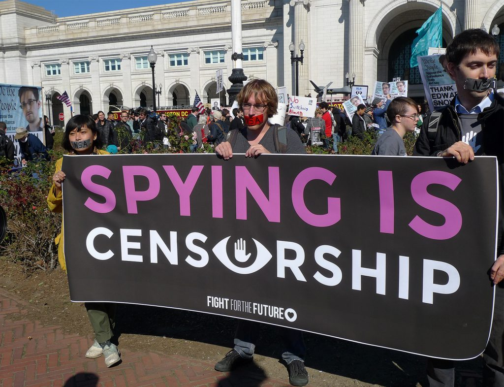

Why Snowden?
Edward Snowden exposed illegal activity by the U.S. government and shocking collusion between large technology companies and spy agencies. He risked everything to blow the whistle and help protect all of our basic rights. He’s being charged under the Espionage Act and has been forced into exile. It’s time to bring him home.
Why now?
Snowden has become a symbol of freedom and transparency. Ending the U.S. witchhunt against him is a necessary first step in addressing government corruption and encouraging other whistleblowers to do the right thing when we need them most. The President has the power to pardon Snowden before he leaves office, but so far has refused. If we don’t change his mind, this could be our last chance to help: the incoming head of the CIA has called for Snowden’s execution. The clock is ticking, we need all hands on deck.
How does it work?
You sign up and authorize the Internet Defense League Twitter app to post a "#PardonSnowden" tweet on your account once per day until the inauguration, helping spread the word about urgent petitions and actions to support Edward Snowden. We will occasionally activate the tool for future free speech campaigns too, and you can opt out at any time. Tweets we auto-post will be signed @IDLTweets.
